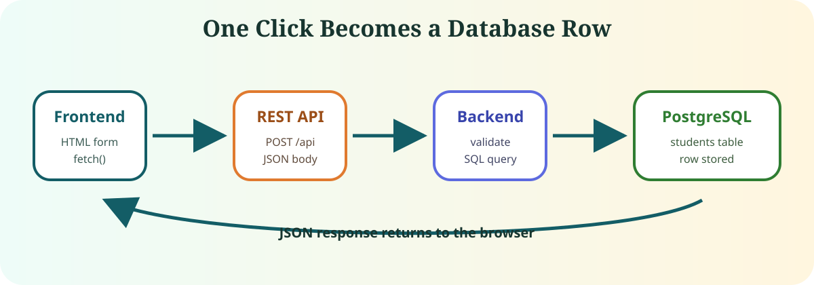
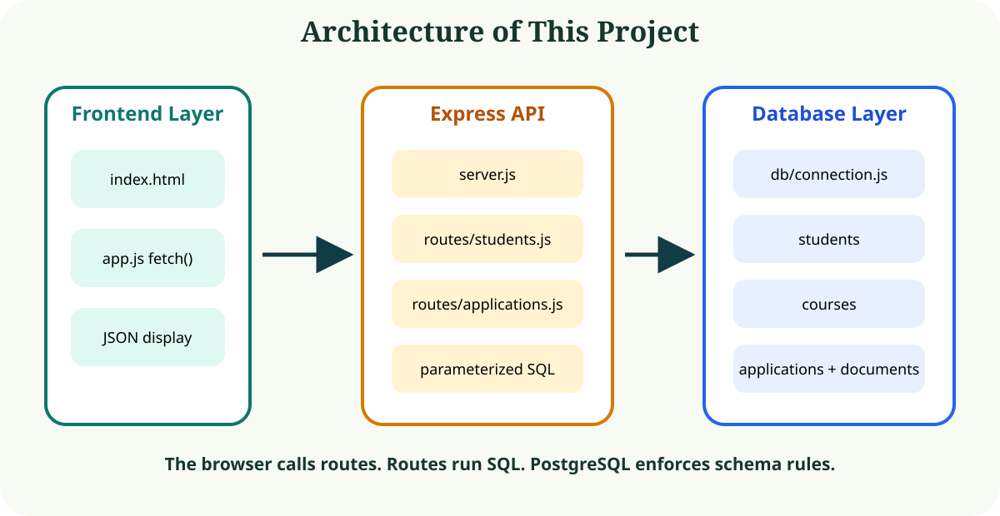
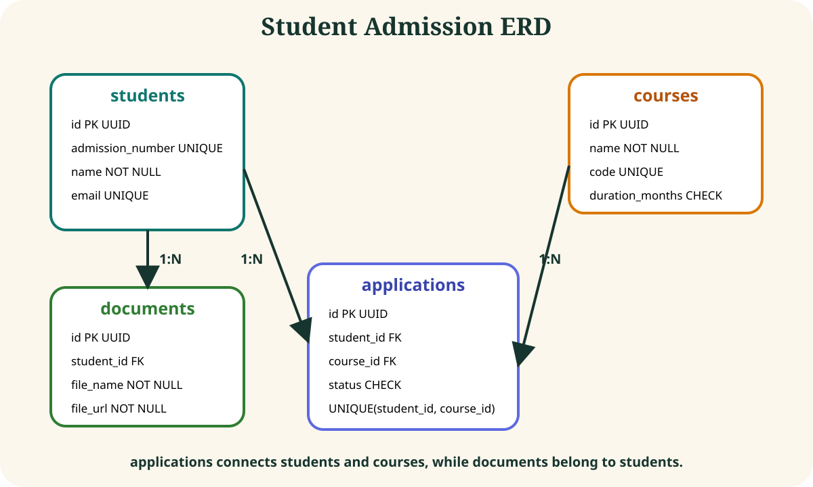
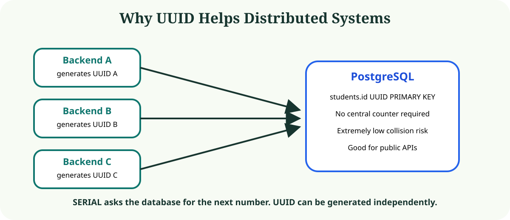
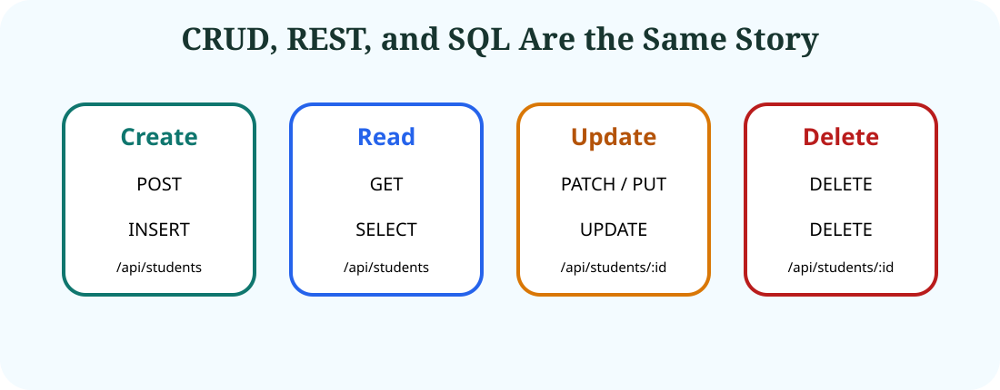
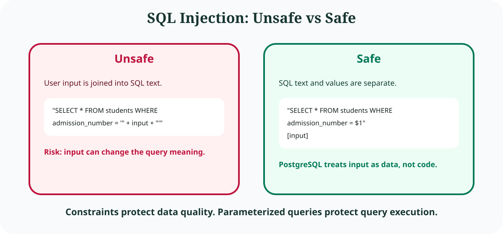
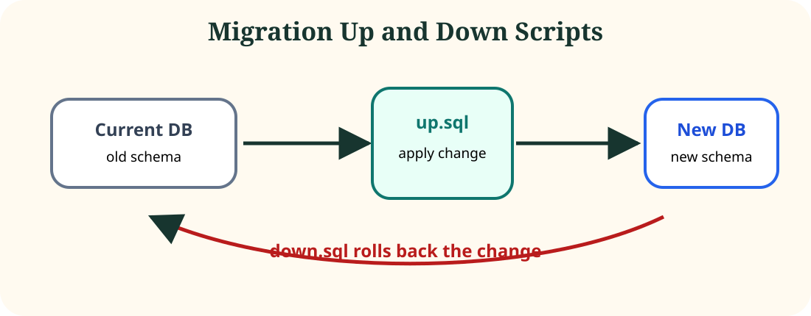

Frontend
HTML forms and JavaScript buttons collect user input and call APIs.
Beginner-friendly full-stack database guide
This website explains how this exact project works: a browser frontend talks to an Express REST API, the backend runs safe PostgreSQL queries, and the database enforces schema rules.
HTML forms and JavaScript buttons collect user input and call APIs.
Express route handlers validate requests and execute SQL through pg.
PostgreSQL stores relational data and blocks invalid rows with constraints.
Source Code
View source code, clone the project, and follow the setup steps.
A GitHub repository stores the project files, version history, documentation, and setup instructions.
https://github.com/Amantabyte/student-admission-db-project
Use this repository as a guided lab. Do not only run it; read each layer and connect it to the database concepts.
Start from public/learning/index.html and understand the full frontend → backend → database flow.
Open db/schema.sql and study tables, columns, primary keys, foreign keys, and constraints.
Open db/migrations and compare up scripts with down scripts.
Open routes/students.js, routes/courses.js, routes/applications.js, and routes/documents.js. Map each REST API to SQL.
Open public/index.html and public/app.js. See how forms send fetch() requests.
Install dependencies, create PostgreSQL database, configure .env, run schema, start server, and open the browser.
Create, search, update, and delete students. Then create courses, create applications, and update application status.
Look at parameterized queries and understand how SQL injection is prevented.
git clone https://github.com/Amantabyte/student-admission-db-project.git
cd student-admission-db-projectThis downloads the project files and moves your terminal into the project folder.
npm installThis installs all Node.js dependencies listed in package.json.
createdb student_admission_dbThis creates the PostgreSQL database where project data will be stored.
cp .env.example .envThis creates your local environment file. Do not commit .env to GitHub.
PORT=3000
DB_HOST=localhost
DB_PORT=5432
DB_NAME=student_admission_db
DB_USER=postgres
DB_PASSWORD=your_password_herepsql -d student_admission_db -f db/schema.sqlThis creates the tables, UUID defaults, foreign keys, and constraints.
psql -d student_admission_db -f db/seed.sqlThis inserts sample students, courses, an application, and a document row.
npm run devThis starts the Express server with auto-restart using Nodemon.
http://localhost:3000
http://localhost:3000/learning/index.html
http://localhost:3000/docs.html.env or node_modules. Commit .env.example so other learners know which variables to create.Use these commands from the project root after creating an empty GitHub repository named student-admission-db-project.
git init
git add .
git commit -m "Initial commit: student admission database learning project"
git branch -M main
git remote add origin https://github.com/Amantabyte/student-admission-db-project.git
git push -u origin main.env.exampleIt documents required variables without exposing private passwords.
.envIt may contain your real database username and password.
node_modulesDependencies are recreated by running npm install.
GitHub visitors usually read README.md first.
This application solves an admission office problem: create students, create courses, record applications, track status, and attach document URLs.

public/app.js sends JSON to POST /api/students.server.js routes it to routes/students.js.INSERT.student-admission-db-project/
server.js Express server entry point
package.json dependencies and scripts
.env.example environment variable example
db/
connection.js PostgreSQL pool using pg
schema.sql complete schema in one file
seed.sql sample data
migrations/ up/down schema scripts
routes/
students.js student CRUD routes
courses.js course CRUD routes
applications.js application routes
documents.js document URL routes
public/
index.html working app UI
app.js frontend fetch calls
docs.html quick concept page
learning/index.html this learning websiteserver.jsStarts Express, serves static files from public, mounts routes under /api, and converts database errors into JSON responses.
db/connection.jsCreates a PostgreSQL connection pool from DATABASE_URL or separate DB_HOST/DB_USER variables. Route files use it as db.query(sql, values).
db/migrationsContains reversible schema files. Up scripts create tables. Down scripts drop them in reverse order.
routes/*.jsEach route file maps HTTP methods to SQL commands for one resource.

The architecture is layered. The browser does UI work. The API exposes controlled operations. Route handlers execute SQL. PostgreSQL stores rows and enforces relational rules.
A relational schema is the design of your database: tables, columns, data types, keys, and constraints. This schema models the admission domain as four tables.
Stores student identity and contact information.
CREATE TABLE IF NOT EXISTS students (
id UUID PRIMARY KEY DEFAULT gen_random_uuid(),
admission_number VARCHAR(30) UNIQUE NOT NULL,
name VARCHAR(100) NOT NULL,
email VARCHAR(255) UNIQUE NOT NULL,
phone VARCHAR(20),
date_of_birth DATE,
created_at TIMESTAMP DEFAULT CURRENT_TIMESTAMP
);Example row: A1001, Anita Sharma, anita.sharma@example.com. The primary key is id. Unique constraints prevent duplicate admission numbers and emails.
Stores courses that students can apply for.
CREATE TABLE IF NOT EXISTS courses (
id UUID PRIMARY KEY DEFAULT gen_random_uuid(),
name VARCHAR(100) NOT NULL,
code VARCHAR(20) UNIQUE NOT NULL,
duration_months INT CHECK (duration_months > 0)
);Example row: BCA, Bachelor of Computer Applications, 36. The check blocks zero or negative durations.
Connects one student to one course and stores the admission decision state.
CREATE TABLE IF NOT EXISTS applications (
id UUID PRIMARY KEY DEFAULT gen_random_uuid(),
student_id UUID NOT NULL REFERENCES students(id) ON DELETE CASCADE,
course_id UUID NOT NULL REFERENCES courses(id) ON DELETE CASCADE,
status VARCHAR(30) DEFAULT 'pending',
created_at TIMESTAMP DEFAULT CURRENT_TIMESTAMP,
UNIQUE(student_id, course_id),
CHECK (status IN ('pending', 'accepted', 'rejected'))
);Foreign keys block fake students/courses. The unique pair blocks duplicate applications for the same student and course.
Stores document metadata and URLs for each student.
CREATE TABLE IF NOT EXISTS documents (
id UUID PRIMARY KEY DEFAULT gen_random_uuid(),
student_id UUID NOT NULL REFERENCES students(id) ON DELETE CASCADE,
file_name VARCHAR(255) NOT NULL,
file_url TEXT NOT NULL,
uploaded_at TIMESTAMP DEFAULT CURRENT_TIMESTAMP
);The database stores file_url, not the actual binary file. The foreign key ensures every document belongs to a real student.

A thing stored in the database, like students or courses.
A column, like email, status, or file_url.
A connection between tables, usually enforced with foreign keys.
One student can have many applications. One course can have many applications.
applications acts like a junction table between students and courses, but it also stores extra business data such as status. A pure many-to-many design would use a junction table such as student_courses(student_id, course_id).
A primary key uniquely identifies one row. This project uses UUID PRIMARY KEY DEFAULT gen_random_uuid() for every table.

128-bit identifier such as 4770fa87-a115-44e7-be44-f7cf5e2f1d49. Good for distributed systems and public APIs.
Sequential numbers like 1, 2, 3. Simpler and smaller, but predictable and centralized.
Foreign keys make relationships real. They force child rows to reference existing parent rows.
applications.student_id → students.id
applications.course_id → courses.id
documents.student_id → students.idUnique row identity. Used on every id. Blocks duplicate IDs.
id UUID PRIMARY KEYRequires a matching parent row. Used by applications and documents.
student_id UUID REFERENCES students(id)Requires a value. Blocks a student without a name.
name VARCHAR(100) NOT NULLPrevents duplicates. Blocks two students with the same email.
email VARCHAR(255) UNIQUEEnforces a rule. Blocks status waiting.
CHECK (status IN ('pending','accepted','rejected'))Fills missing values. Creates UUIDs and timestamps automatically.
created_at TIMESTAMP DEFAULT CURRENT_TIMESTAMPValid insert:
INSERT INTO courses (name, code, duration_months)
VALUES ('Bachelor of Science', 'BSC', 36);Invalid insert blocked by CHECK:
INSERT INTO courses (name, code, duration_months)
VALUES ('Broken Course', 'BAD', -3);DML means Data Manipulation Language: INSERT, SELECT, UPDATE, and DELETE.

| CRUD | REST Method | SQL | Project Example |
|---|---|---|---|
| Create | POST | INSERT | POST /api/students |
| Read | GET | SELECT | GET /api/students |
| Update | PATCH/PUT | UPDATE | PATCH /api/students/:id |
| Delete | DELETE | DELETE | DELETE /api/students/:id |
POST /api/students
GET /api/students
GET /api/students?admission_number=A1001
GET /api/students/:id
PATCH /api/students/:id
PUT /api/students/:id
DELETE /api/students/:idINSERT INTO students (admission_number, name, email, phone, date_of_birth)
VALUES ($1, $2, $3, $4, $5)
RETURNING *;POST /api/courses
GET /api/courses
GET /api/courses/:id
PATCH /api/courses/:id
DELETE /api/courses/:idINSERT INTO courses (name, code, duration_months)
VALUES ($1, $2, $3)
RETURNING *;POST /api/applications
GET /api/applications
GET /api/applications/:id
PATCH /api/applications/:id/status
DELETE /api/applications/:idUPDATE applications
SET status = $1
WHERE id = $2
RETURNING *;POST /api/documents
GET /api/documents
GET /api/documents/student/:studentId
DELETE /api/documents/:idSELECT * FROM documents
WHERE student_id = $1
ORDER BY uploaded_at DESC;Path params come from the URL, query params come after ?, and request bodies are JSON sent with POST/PATCH/PUT.

SQL injection happens when user input becomes executable SQL.
// Bad: input is concatenated into SQL text.
const sql = "SELECT * FROM students WHERE admission_number = '" + input + "'";// Safe: SQL text and input values are separate.
await db.query(
"SELECT * FROM students WHERE admission_number = $1",
[input]
);PostgreSQL can store binary data using BYTEA. Real systems often store files in object storage and keep only metadata in the database.
{
"student_id": "student-uuid",
"file_name": "marksheet.pdf",
"file_url": "https://storage.example.com/marksheet.pdf"
}This project uses documents.file_url because URLs keep the database small and make file delivery easier.

Migrations are schema changes saved as files. Teams use them so everyone applies the same database changes in the same order.
-- up.sql
ALTER TABLE students ADD COLUMN date_of_birth DATE;
-- down.sql
ALTER TABLE students DROP COLUMN date_of_birth;This project has four migration pairs: students, courses, applications, and documents. Run up scripts in dependency order and down scripts in reverse order.
psql -d student_admission_db -f db/migrations/001_create_students_up.sql
psql -d student_admission_db -f db/migrations/002_create_courses_up.sql
psql -d student_admission_db -f db/migrations/003_create_applications_up.sql
psql -d student_admission_db -f db/migrations/004_create_documents_up.sqlA production migration tool usually records applied versions in a table such as schema_migrations. This project keeps migration files simple for learning.
server.js starts Express, enables JSON parsing, serves frontend files, mounts routers, and handles errors.
app.use(express.json());
app.use(express.static('public'));
app.use('/api/students', studentRoutes);db/connection.js creates the PostgreSQL pool.
const pool = new Pool({
host: process.env.DB_HOST,
port: process.env.DB_PORT,
database: process.env.DB_NAME,
user: process.env.DB_USER,
password: process.env.DB_PASSWORD
});
module.exports = {
query: (text, params) => pool.query(text, params)
};The project also supports DATABASE_URL as an optional single connection string.
Routes read request data from three places:
req.body // JSON body
req.query // ?admission_number=A1001
req.params.id // /api/students/:idpublic/index.html contains forms and buttons. public/app.js listens to events, converts form fields to JSON, calls the API, and displays JSON responses.
fetch('/api/students', {
method: 'POST',
headers: { 'Content-Type': 'application/json' },
body: JSON.stringify(formData)
});The frontend has no SQL, no database password, and no direct PostgreSQL connection. That keeps data access controlled by the backend.
{ "admission_number": "A2001", "name": "Aman", "email": "aman@example.com" }POST /api/students
Content-Type: application/jsonrouter.post('/', async (req, res, next) => { ... })INSERT INTO students (...)
VALUES ($1, $2, $3, $4, $5)
RETURNING *PostgreSQL creates a UUID and stores Aman.
The frontend displays the saved row in the response panel.
Then Aman can be searched with GET /api/students?admission_number=A2001, updated with PATCH /api/students/:id, connected to a course with POST /api/applications, accepted with PATCH /api/applications/:id/status, or deleted with DELETE /api/students/:id.
Click the button.Choose a layer.
Because browser code is public. Exposing database credentials or raw SQL access would allow users to bypass the backend and damage or steal data.
It calls APIs. Express talks to PostgreSQL.
It can store binary data with BYTEA, but URLs are usually better for large files.
Constraints validate rows. Parameterized queries protect SQL execution.
It is a 128-bit identifier with a standard representation.
It is a table-level uniqueness rule, usually applied to one column.
Both often run SQL UPDATE, but PUT usually replaces a resource while PATCH partially updates it.
This project is a full-stack admission app. HTML/JS sends requests to Express. Express validates input and runs safe PostgreSQL queries. PostgreSQL stores students, courses, applications, and documents with UUIDs, foreign keys, and constraints.
A user fills forms in the browser. JavaScript calls routes like POST /api/students. Express receives JSON, uses route files to run parameterized SQL through pg, and PostgreSQL enforces the schema. Responses return as JSON and are displayed on the page.
The backend starts in server.js, connects route modules, and uses db/connection.js for pooled PostgreSQL access. SQL files define UUID primary keys, foreign keys, unique constraints, checks, defaults, and reversible migrations. The frontend stays thin and safe by calling APIs instead of accessing the database directly.